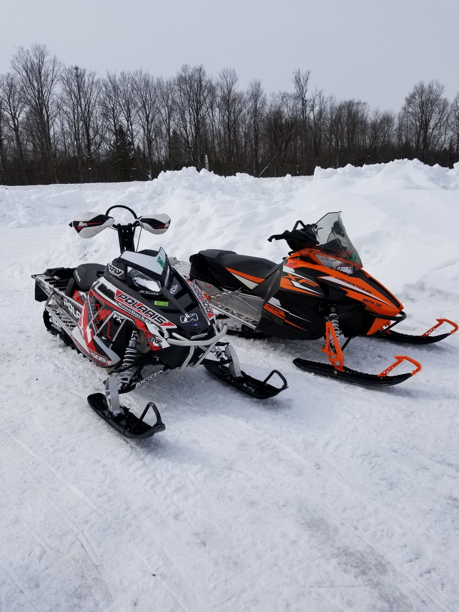
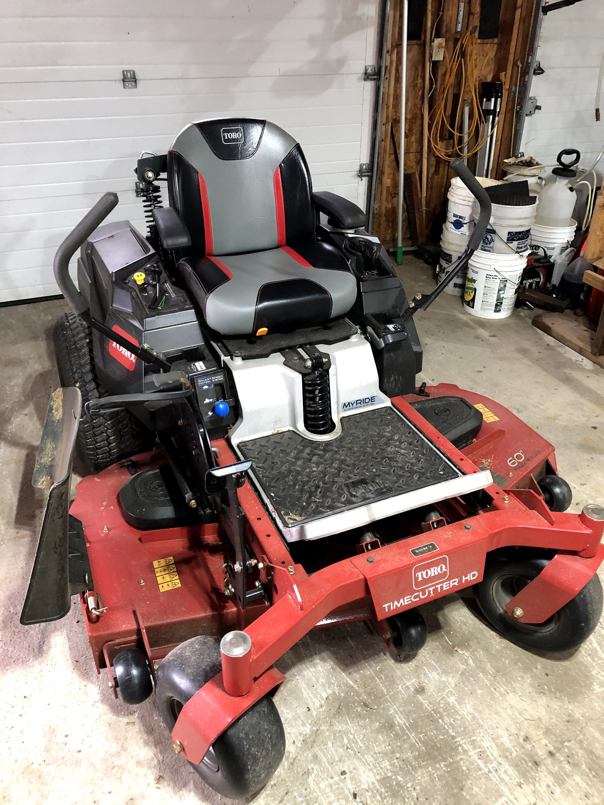
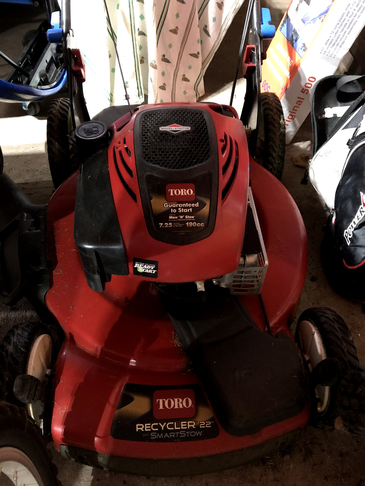
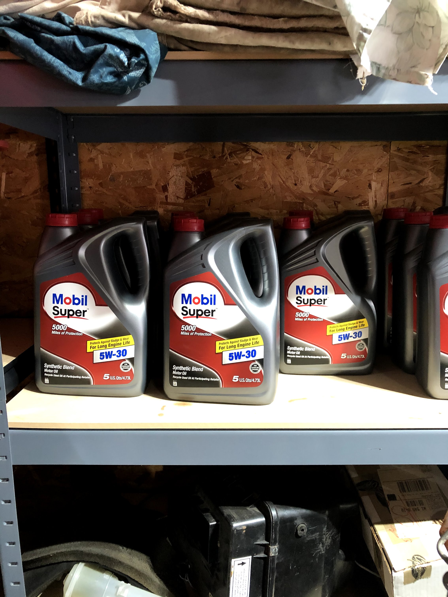
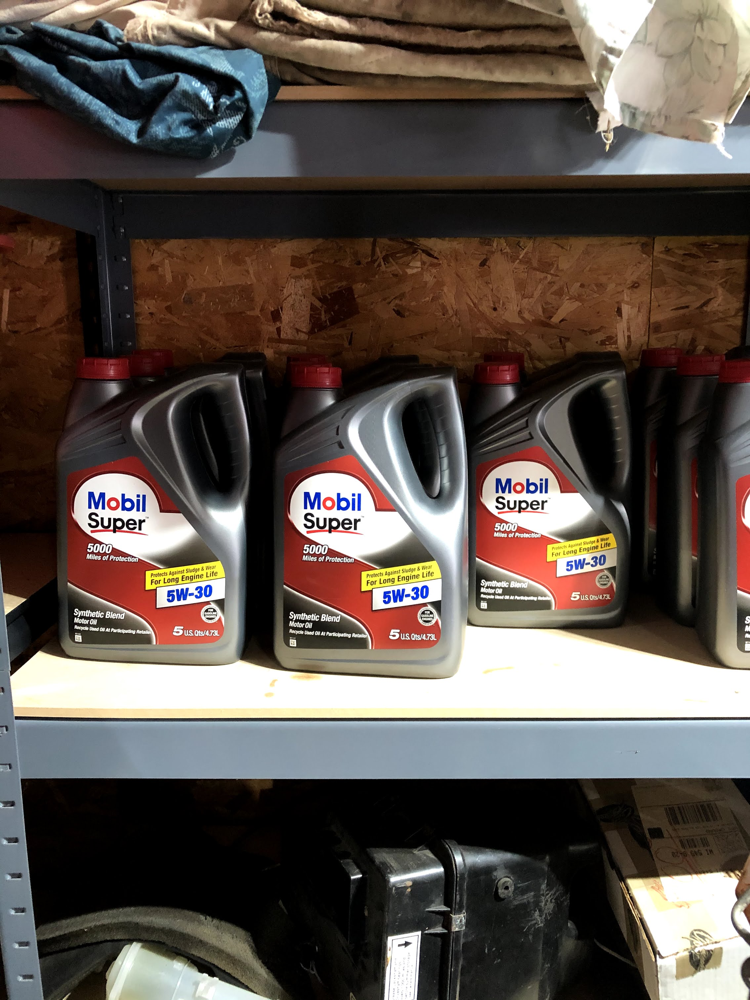

We specialize in small engine repair and maintainence. Small engines include snowmobiles, fourwheelers,
motorcycles, and lawnmowers. Also the installation of vinyl wraps is something we do.



The amount of work that we do ranges from small engine oil changes to engine rebuilds. It is important to keep your engine full of fluids and
in top notch condition. We only use the highest quality filters and oil.
 

Performance products are something we also install. These are needed to improve the quality of ride on your machine. These include but are not limited to
exhausts, tracks, slides, skis, tires, mower blades, intakes, and studs.
We are located at 123 Grand Ave, Wausau, WI 54403.